💋
When we talk about desire in fan spaces, it’s easy to assume that we’re talking about sexuality. Which is only partly true. In fan spaces, desire is more than sex. It’s about who you want to be.
In Lauren Berlant’s definition, desire is an abstract, unknowable force inside of us that seeks expression by attaching itself to concrete objects.1 Essentially, our desires want to formalize into something that we can understand and interact with because doing so allows us to express that desire—even if ultimately satisfying it remains perpetually out of reach. This particular dimension is what I’m most drawn to in my work on emo fandom, which is so dominated by queer expressions of desire and the invention of objects to attach that desire to.
Here, I’m theorizing that the emo idol a fan looks up to is the object that enables the expression of queer desire. Because celebrities are ultimately unknowable from a fan’s position, the emo idol is a construction of the fan’s imagination, which emerges largely from the fan themselves and is shaped by their wants, needs, and inner drives. Interacting with the idol-object through fan behaviors allows the fan to explore alternative gendered and sexual ways of being via eroticizing the idol directly and/or projecting the self onto the idol (where the idol becomes an empowering alter-ego). In this second sense, the fan is able to live vicariously through their idol and experience queer pleasures as their object of attachment engages publicly in queer acts.
Fandom is the direct product of shared obsession. It organizes around passion, intensity, and collective love for something that makes you feel more yourself. One of the easiest ways that we can think about desire in this sense is through fan works like art and fanfiction (the weirder the better). An anonymous tumblr user beautifully describes fandom in their zine as “real, unrestrained love for someone or something that pushes you to the point of creation.”
Fan practices like these have been historically trivialized because of their association with young women and for the way that they challenge social norms. In their introduction to Fandom as Methodology, Catherine Grant and Kate Random Love write that “fan writing drips with desire, crossing boundaries, refusing categories.”2 I’m especially drawn to their pairing of desire with “dripping” here, which connotes feelings of stickiness, tactility, and excess. In framing desire in fan works as something that “drips,” they emphasize the way that desire necessarily breaches its container. If desire is contained by dominant (white cisheterosexual) social norms, what “drips” beyond the boundaries of propriety in fan works are desires that are too much for the mainstream culture to make sense of. In this space, desire becomes perverse, monstrous, and obscene.
This type of transgressive desire obviously emerges when fans express homosexual feelings toward an idol, but it also materializes when teen girls role-play as middle aged male musicians over online chat, when non-white fans passionately assert their love in music scenes imagined to be white (i.e. emo), and when grown women “waste their (reproductive) time” indulging in fannish behaviors beyond the point of adolescence.
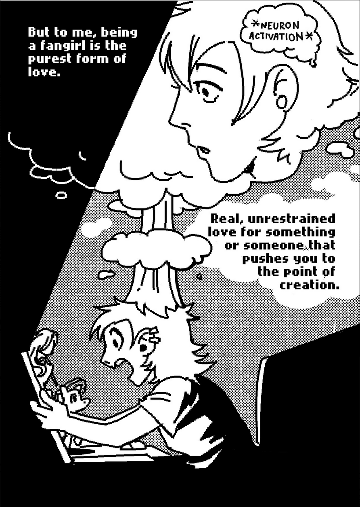
My first examples show instances of queer desire in the colloquial sense, where fans bend gender terminologies and identities to express romantic or sexual attraction. Here, emo fans can use their idol as a vehicle to explore their own queer desires, especially when the idol encourages queer readings of themself through their public self-presentation. This is the point I’m going to spend the least amount of time on because I feel like queer desire in this sense is relatively straightforward, but I did want to note the way that humor plays into this discourse. The majority of these expressions that I come across are tapping into some level of humor or absurdity, or hyperbole, which collectively establish emo fandom as a space for lighthearted self-exploration and queer joy. Here, the emo idol becomes an object that fans can use to express non-normative desires and vent forms of desire that get suppressed in their daily lives. Fanfiction writers often describe their work as “playing with my dolls” to get at the catharsis and sense of imaginative freedom that their writing affords them. The phrasing here also highlights the way that fans (for the most part) broadly understand fanfiction as fiction, rather than authentic speculation into real people’s actual lives. In this way, fan works create a space for queer play and ontological experimentation.
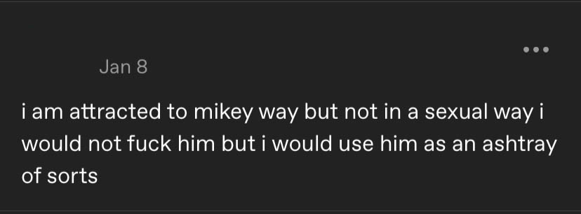
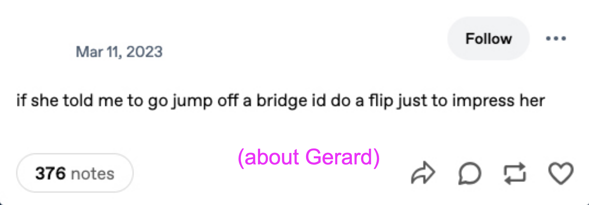
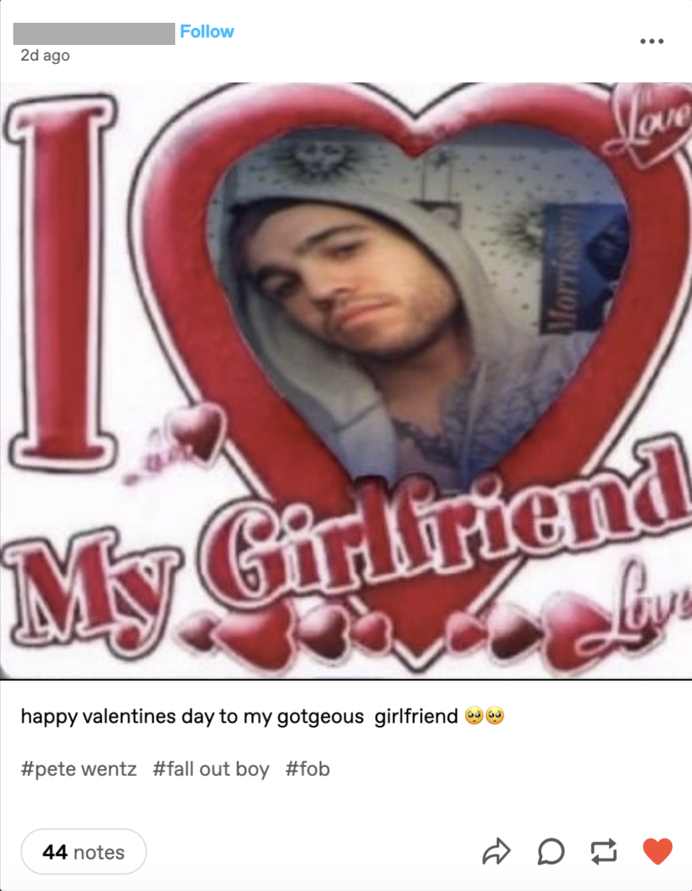
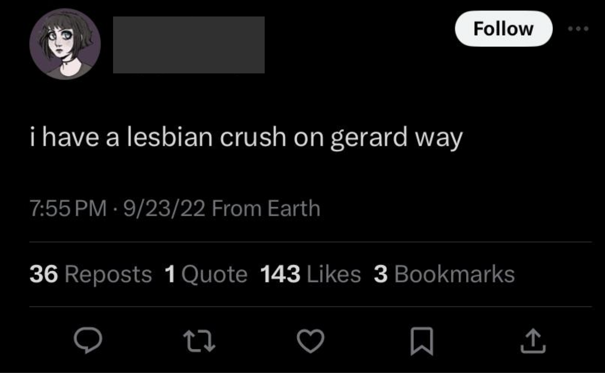
Next, let’s look at how queer emo fans identify with their idol figure. In regards to the above posts, I should clarify that Gerard Way is not a woman and Patrick Stump is not a trans man, despite how often fans describe them as such. But! That doesn’t mean that a queer fan can’t find queerness in their 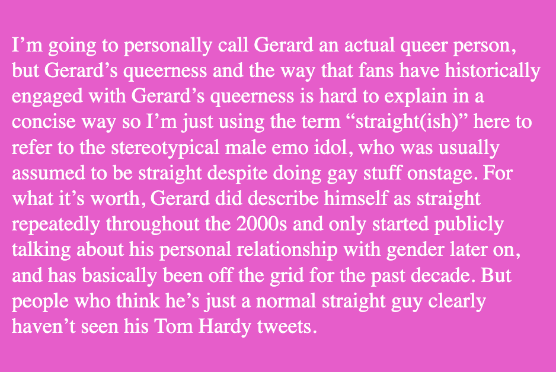
To reiterate Berlant’s definition, desire is an abstract and unknowable force that wants to attach itself to objects so that our desires can be expressed. With the examples in the previous section, this happens when queer-identified fans express attraction toward their idol by bending conventional gender norms and terms (i.e. “pete wentz is my gotgeous girlfriend”). That queer attraction towards the emo idol enables the expression of their internal desire.
In both of the examples above, fans first tap into existing fandom discourses that construct Gerard Way or Patrick Stump as representations of trans identity despite the fact that neither describe themselves as trans. Then, fans express their personal identification with the particular brand of queerness that they’ve interpreted in their idol. Again, the “idol” here is not a real person but rather a constructed text that takes on meaning through public discourse. As queer fans repeatedly talk about Patrick Stump through a transmasc lens, they explore how they want to present themselves, how they want to relate to other people, and what it means to “be” transmasc at all. Is their obsession with Patrick based on a desire to be with him or be like him? Ultimately, the distinction between the two doesn’t really matter—his idol persona represents an ontological horizon to reach toward, which allows the fan to imagine new identities they adopt or ways that they might navigate the world around them.3
When this Twitter user describes Gerard Way as a he/they lesbian, they obviously gesture toward an identity full of gendered contradictions if you consider it through the logic of typical cisgender and heteronormative culture. They interpret Gerard’s masculinity through a butch lesbian lens, using Gerard’s alignment with femininity and queerness to shape him into a version of queerness that they themselves want to embody. Here, the emo idol becomes the object of a fan’s desire, which allows them to legitimize and celebrate an unconventional queer identity that they feel personally aligned with. Essentially, if you can see your idol as an extension of you, you can redirect your love for your idol back to yourself.
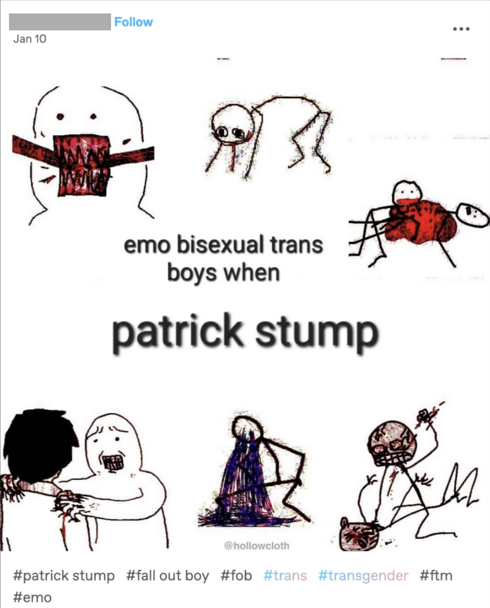
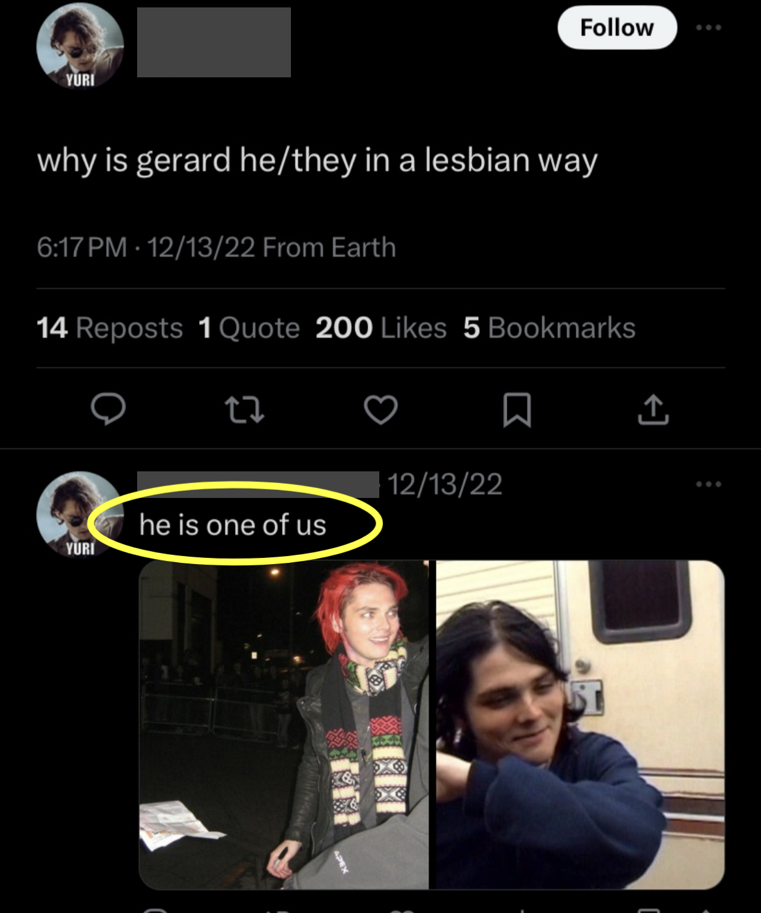
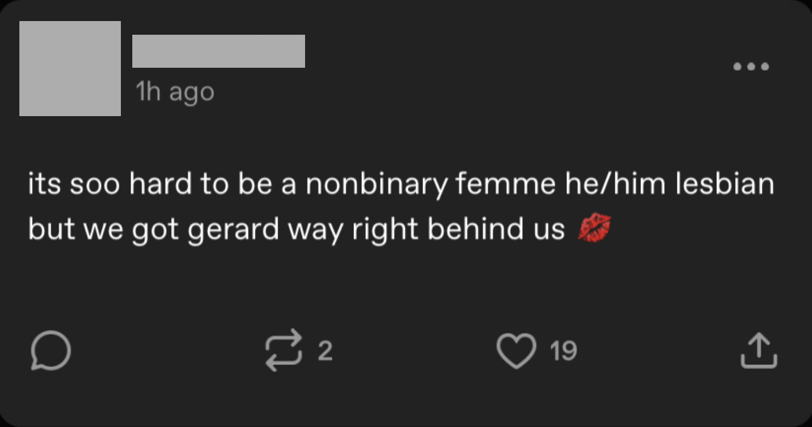
Finally, let’s talk about queer imagining.
The examples below illustrate the final dimension to this topic that I want to look at, which is the way that queer desire formalizes through imagination and self-projection.
In the same way that constructing an idol as queer and then identifying with them lets fans celebrate a particular type of gender identity, idol worship also lets fans live out queer experiences vicariously through the band member that they look up to. Consuming an emo idol’s content (concerts, social media posts, etc.) with the rest of the fan community is a sort of “reading” process where fans get to follow along with a character (idol) and interpret their experiences as said idol lives out an idealized rockstar life. In a queer fan space, an idol expressing queerness publicly also allows the fan to gratify their own queer desires by watching someone who feels like a part of themselves perform queerness. Essentially, the idol becomes a fan’s alter ego through whom they gain access to heightened queer experiences that they don’t have access to in their daily lives.
When Pete Wentz drapes himself erotically around a bandmate, or Frank Iero pauses in the middle of a song to lick Gerard Way’s face, these affectively-charged moments formalize into objects of desire for fans to play around with. Fans can imagine what it would be like to do these things, they can write them (literally) into their own speculative stories, and they can explore their own feelings about queer sexuality and gender transgression through their attachment to their idol. Activities like these transform emo fandom into a playful and communal space, where fans can relate over how confusing desire is when you’re not sure if you want to be with someone, be like someone, or be someone. (When you’re dealing with desire, these categories usually overlap so much that trying to distinguish between them ends up being impossible anyway.) By bonding collectively over the queer emo idol, emo fans can craft and celebrate identities that evade the logics of mainstream gender frameworks.
Ultimately, the point I want to make here is that it’s fun to look up to someone like you! It’s exciting to look for pieces of yourself in someone you admire, and to feel like you have this external part of yourself living a cool rockstar life, even when you know that your fantasies probably don’t bear much resemblance to reality. In this type of environment, you get things like the age-old MCR tradition where nonbinary dykes who use he/they pronouns dress up like Gerard Way, who was actually dressing like a (boy)girl in the first place.
In conclusion, the emo idol is the object that enables the expression of queer desire. This allows fans to explore alternate sexual and gendered ways of being—whether these are expressing erotic feelings toward the idol directly, by shaping the idol’s sexual or gender identity to align with their own, or by imagining that they are the idol on some capacity. And when this happens communally, emo fandom becomes a space where fans can celebrate their own queerness by idolizing emo band members.
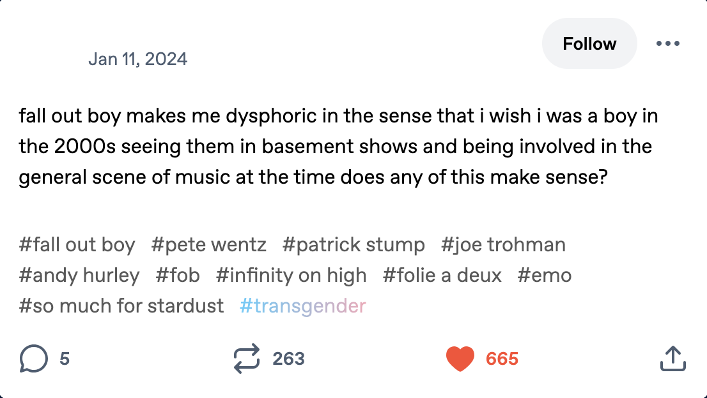
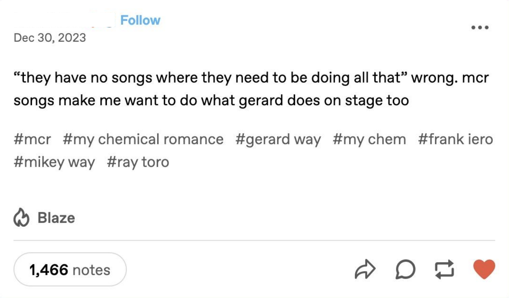
1 Lauren Berlant, Desire/Love (punctum books, 2012): 5-18.
2 Catherine Grant and Kate Random Love, Fandom as Methodology: A Sourcebook for Artists and Writers (Goldsmiths Press, 2019): 4.
3 Hil Malatino, Side Affects: On Being Trans and Feeling Bad (University of Minnesota Press, 2022): 79-84.